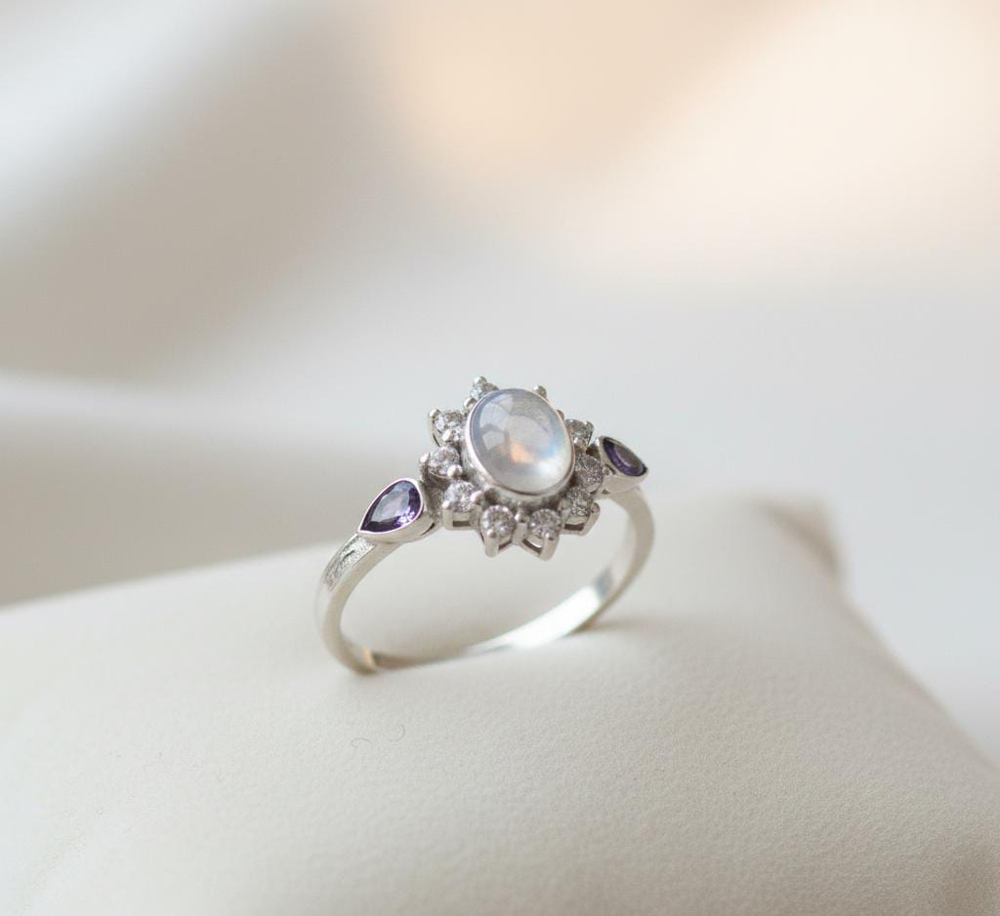

Na Escola Oréa, cada criação nasce com propósito. Unimos técnica, arte e sustentabilidade para formar criadores conscientes, que transformam materiais em significado e beleza com alma.

SOBRE NÓS
Helena é uma designer e apaixonada por culturas e tradições artesanais.
Após viajar por diversos países e aprender técnicas de joalheria e cultura locais, criou uma linha de
acessórios que une sofisticação, propósito e respeito ao meio ambiente.
Inspirada pelas formas naturais e pela simbologia dos materiais, desenvolve peças únicas com metais
reaproveitados e pedras naturais de pequenos produtores. Para ela, cada detalhe carrega um elo entre
passado, identidade e um futuro consciente.
Além disso, fundou uma oficina que ensina artesanato sustentável, fortalecendo o valor do feito à mão
com responsabilidade e uma experiência única.